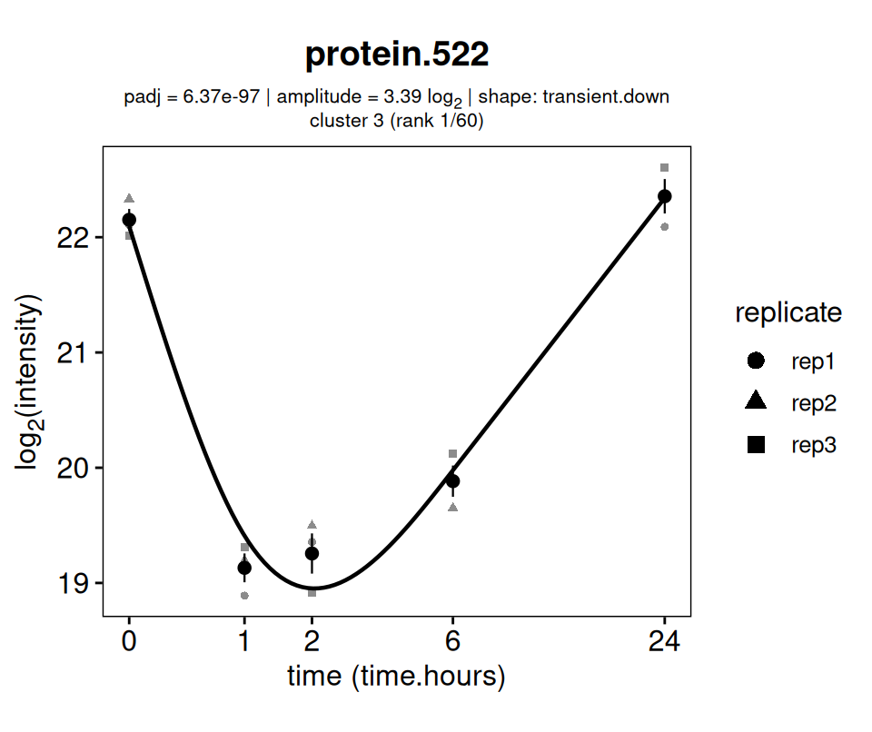
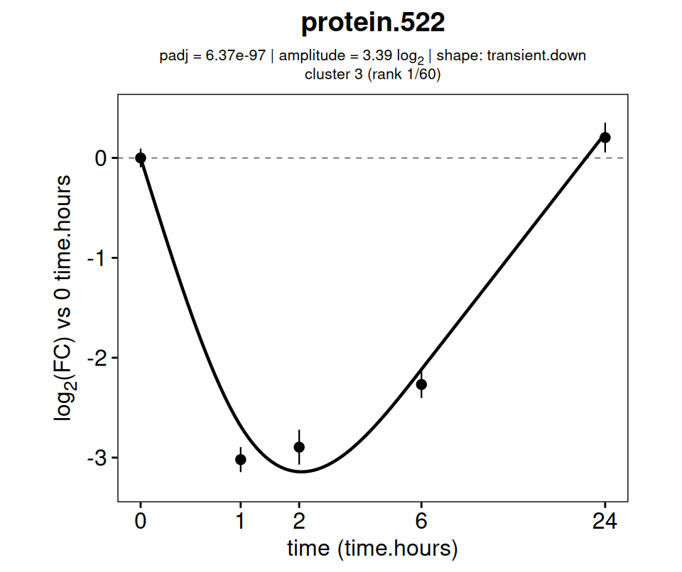
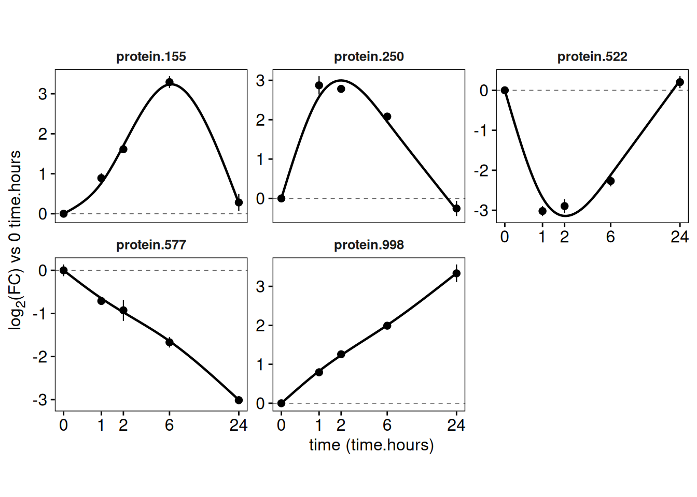
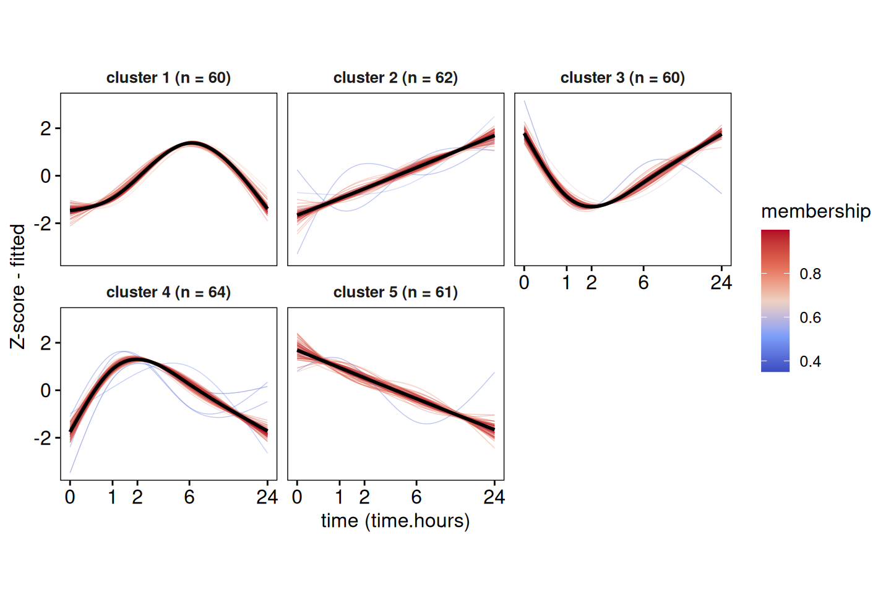
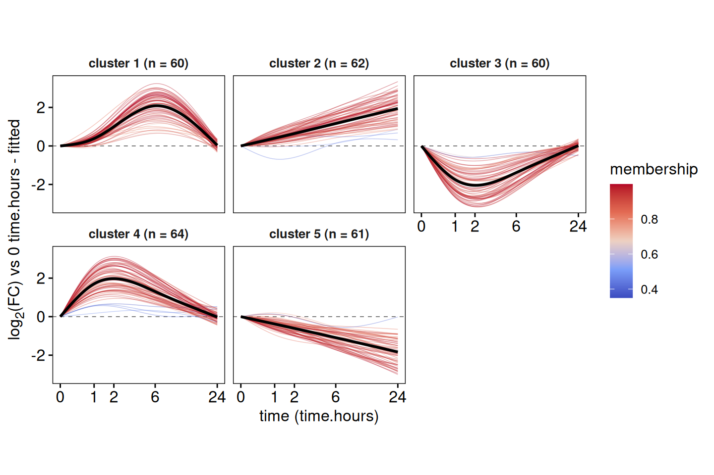
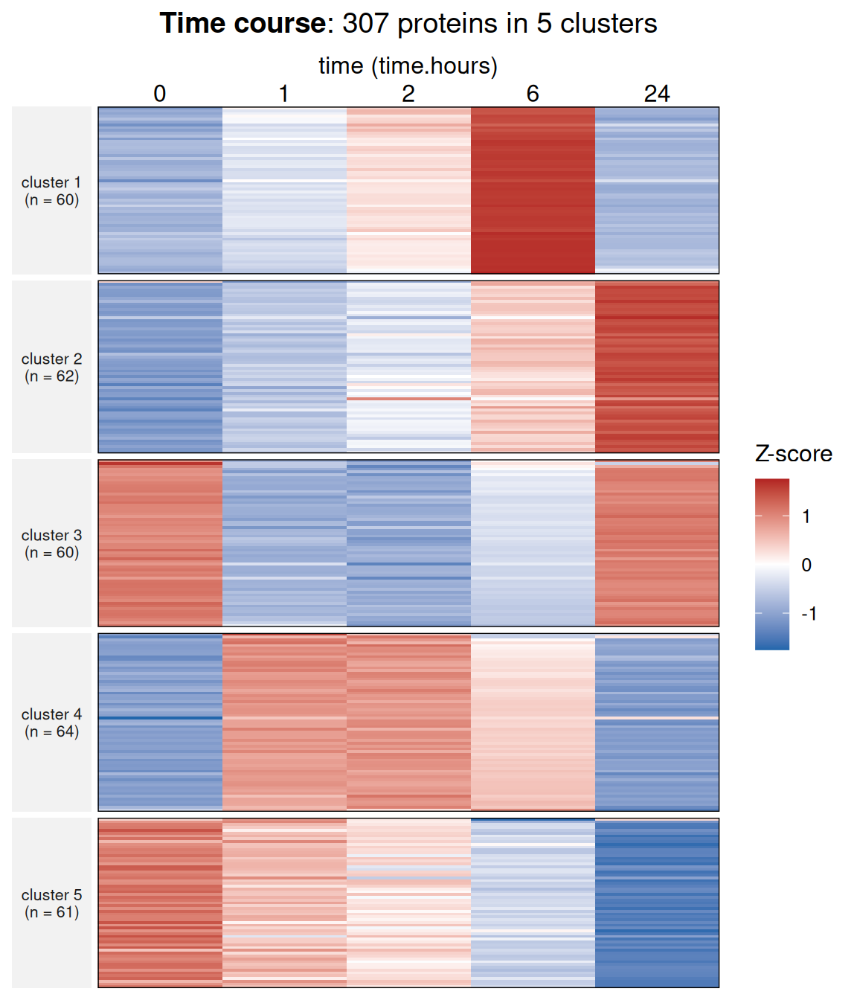
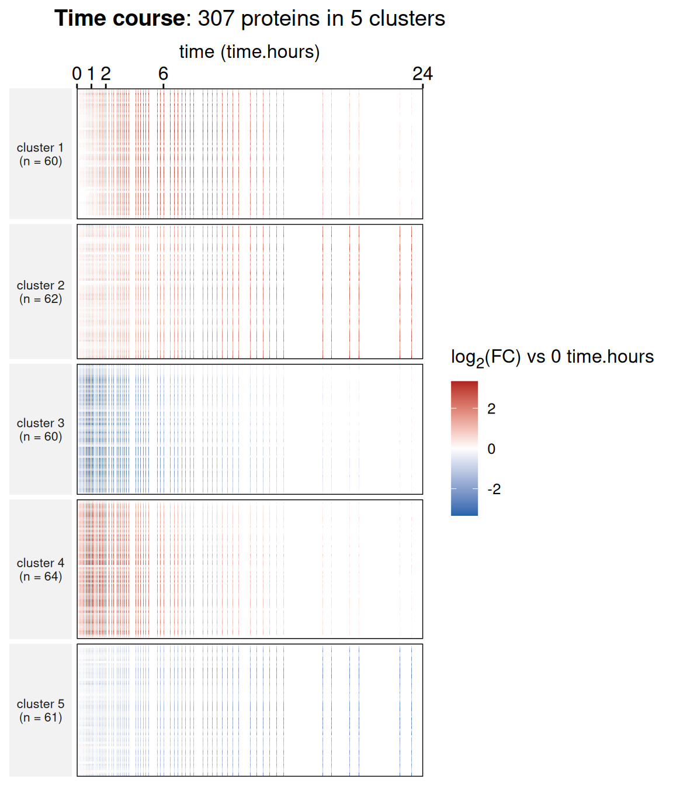
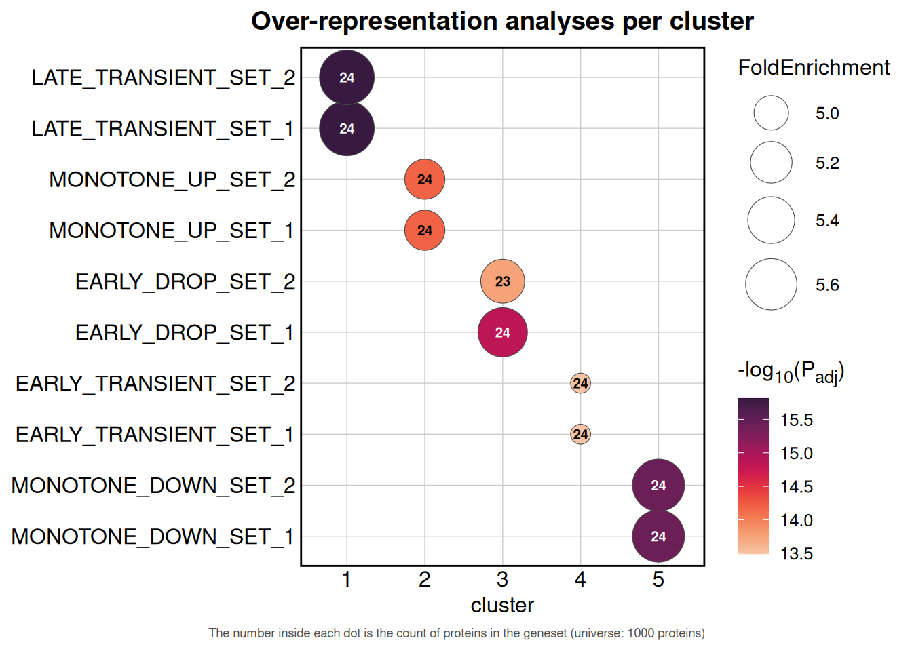
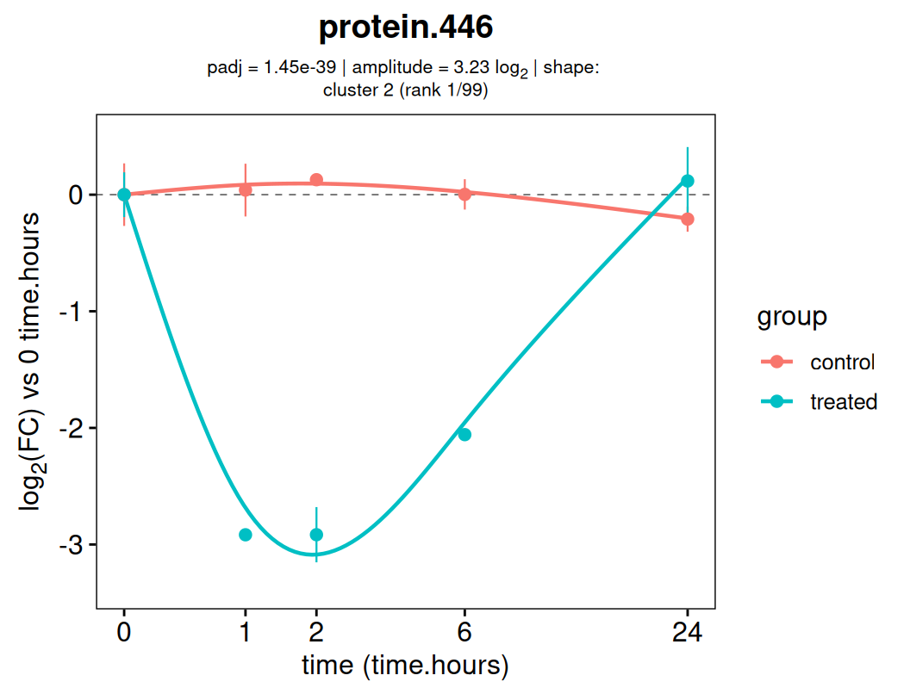

DEprot: time-course analyses
Sebastian Gregoricchio, Ph.D.
Netherlands Cancer Institute, Oncogenomics division, Amsterdam - Netherlandss.gregoricchio@nki.nl
Nils Eickhoff, Ph.D.
Netherlands Cancer Institute, Oncogenomics division, Amsterdam - Netherlandsn.eickhoff@nki.nl
Last update: 02th September, 2026
Source:vignettes/DEprot.timecourse.vignette.Rmd
DEprot.timecourse.vignette.Rmd


Introduction
A time course is not a series of pairwise comparisons. If you treat the timepoints as independent groups and run one contrast per pair, you multiply the number of tests, you throw away the ordering of the timepoints, and you end up with a protein declared significant at 6 h but not at 2h or 24h without knowing whether that means anything.
The functions described here take the opposite approach. Time enters the model as a numeric covariate: a natural-spline basis of the time is fitted to each protein and all the spline coefficients are tested together with a moderated F-test. The question becomes “does this protein change over time at all?”, answered with a single p-value per protein, and no contrast to name.
Two things follow from treating the time numerically. The uneven spacing of a typical design (0, 1, 2, 6, 24 hours) is handled explicitly instead of being flattened into five equidistant categories, and the model returns a continuous trajectory, from which the amplitude of the response, its initial rate, its timing and the moment of maximal change can be read directly.
The workflow covered by this vignette is:
-
simulate a small dataset and build a
DEprotobject; -
fit the trends and cluster them with
analyze.timecourse(); - inspect individual proteins and cluster profiles;
- draw the heatmap of the clusters;
- rank the proteins inside a cluster;
- order sequential events, for instance in an interaction time course;
- run the enrichment analyses cluster by cluster;
- test two groups against each other.
The dataset
To keep this vignette self-contained and fast to build, the data are simulated by an internal function rather than shipped with the package. The design is five timepoints (0, 1, 2, 6 and 24 hours) in three replicates, for 15 samples and 1000 proteins.
Thirty percent of the proteins respond, split evenly across five kinetic archetypes: monotone up, monotone down, an early transient peak, a late transient peak, and an early drop followed by a rebound. The rest are flat plus noise. The function also returns a geneset annotation in which each geneset is enriched in one archetype, so that the enrichment analyses further down have something real to find.
sim <- DEprot:::.simulate.timecourse(n.proteins = 1000,
timepoints = c(0, 1, 2, 6, 24),
n.replicates = 3,
fraction.responsive = 0.3,
seed = 1234)
names(sim)
> [1] "counts" "metadata" "truth" "TERM2GENE"The metadata contain a time.hours column with numeric
values. This is the only real requirement of the module:
analyze.timecourse() will refuse a column of factors or of
strings such as “6h”, since the whole point is to use the
spacing of the timepoints.
| column.id | time.hours | replicate | group | combined.id |
|---|---|---|---|---|
| T0_rep1 | 0 | rep1 | all | T0 |
| T0_rep2 | 0 | rep2 | all | T0 |
| T0_rep3 | 0 | rep3 | all | T0 |
| T1_rep1 | 1 | rep1 | all | T1 |
| T1_rep2 | 1 | rep2 | all | T1 |
| T1_rep3 | 1 | rep3 | all | T1 |
| T0_rep1 | T0_rep2 | T0_rep3 | T1_rep1 | T1_rep2 | T1_rep3 | |
|---|---|---|---|---|---|---|
| protein.1 | 20.95 | 20.35 | 20.72 | 20.40 | 21.02 | 20.48 |
| protein.2 | 23.87 | 23.82 | 23.69 | 24.00 | 23.97 | 23.75 |
| protein.3 | 24.86 | 24.36 | 24.12 | 24.40 | 25.01 | 24.70 |
| protein.4 | 25.03 | 25.08 | 25.49 | 27.92 | 28.29 | 27.75 |
| protein.5 | 19.80 | 19.26 | 19.52 | 19.45 | 19.11 | 19.59 |
Build the DEprot object
The counts are already in log2 and complete, so they are loaded as imputed data and no normalization or imputation step is required.
dpo <- load.counts2(counts = sim$counts,
metadata = sim$metadata,
data.type = "imputed",
log.base = 2,
column.id = "column.id")
dpo
> DEprot object:
> Samples: 15
> Proteins: 1000
> Counts available: imputed
> Log transformation: log2
> Metadata columns: column.id, time.hours, replicate, group, combined.idFitting the trends
analyze.timecourse() needs the object and the name of
the numeric time column. Everything else has a default, but two
arguments deserve attention before you run it on real data.
The time transformation
With timepoints at 0, 1, 2, 6 and 24 hours, a spline fitted on the
raw hours places almost all of its leverage on the last point: the
interval between 6 and 24 h is longer than the whole rest of the
experiment. Setting time.transform = "log2" re-spaces the
design (the transformation is applied as log2(t +
1), so t = 0 is allowed) and gives the early timepoints the weight
they deserve.
Leave it at "none" when the timepoints are evenly
spaced, for instance 0, 6, 12, 18 and 24 h.
The degrees of freedom
A natural spline with df degrees of freedom needs at least
df + 2 distinct timepoints. Fitting more than that produces a
saturated model, which is mathematically identical to treating the time
as a factor and gains you nothing. The function caps
spline.df automatically and warns when it does, but it is
worth knowing what the ceiling is: with five timepoints the maximum is
3, with four it is 2, and below four timepoints a linear trend is fitted
instead of a spline.
NOTE: a linear trend can only detect monotone responses. If you expect transient effects, which are the rule in degron and stimulation experiments, plan for at least five timepoints.
tc <- analyze.timecourse(DEprot.object = dpo,
time.column = "time.hours",
time.transform = "log2",
which.data = "imputed",
padj.th = 0.05,
log2.amplitude.th = 0.5,
n.clusters = 5,
seed = 1234)
tc
> DEprot.timecourse object:
> Counts used: imputed
> Time column: time.hours (transform: log2)
> Timepoints: 0, 1, 2, 6, 24 [n = 5]
> Model: natural spline (df = 3)
> Proteins tested: 1000
> Trending proteins: 307 (padj < 0.05, amplitude > 0.5)
> Clusters: 5 (cmeans, m = 2.229)The number of clusters was fixed at 5 here because we know the
simulation used five archetypes. On real data, leave
n.clusters = NULL and the function will estimate it by
silhouette over k.range. That step runs a PAM clustering
for each candidate k, which is the slowest part of the whole
analysis; it is performed on a subsample of at most 2000 proteins to
keep it manageable.
The DEprot.timecourse object
The output is an S4-vector whose slots are accessed with
@:
| Slot | Description |
|---|---|
| results | one row per protein: statistics, kinetic descriptors, cluster and ranking |
| fitted.curves | named list of matrices (proteins x grid points) with the fitted trajectories, one element per group |
| time.grid | the positions of the prediction grid, on the original time scale |
| observed.means | named list of matrices with the mean measured value at each timepoint |
| timepoints | the observed timepoints |
| counts.used | the counts effectively analysed, kept so that the plots are self-contained |
| tc.metadata | metadata of the samples analysed |
| sample.subset | the list of samples analysed |
| data.used | which counts table was used (imputed, normalized, raw) |
| design | the model matrix passed to limma
|
| clusters | membership matrix, centroids, method, k and
fuzzifier; NULL when the clustering was skipped |
| params | all the parameters used |
| profile.plot | the cluster profile plot, stored at the moment of the analysis |
The results table
Beside the usual statistics, the table carries five descriptors read off the fitted curve. They are what makes a numeric time course worth the trouble.
- amplitude: the full log2 range spanned by the trajectory, that is, the size of the response;
- initial.slope: the rate of change over the first 5% of the time range, per unit of original time. This is the kinetic rate, the number people actually want from a degron experiment;
- t.half: the time at which the curve reaches 50% of its own maximal deviation from the baseline. Contrary to the initial slope, which scales with the size of the response, this is a pure timing parameter and can therefore be compared between proteins of very different abundances;
- peak.time: the moment at which the curve is furthest from its baseline;
-
trend.shape:
monotone.up,monotone.down,transient.up,transient.down,complexorflat, derived from the sign changes of the derivative.
The trend.status column splits the proteins into
trending (significant and with an amplitude above
log2.amplitude.th), unresponsive (significant
but too small to matter) and null.
head(get.timecourse.results(tc, top.n = 8))| prot.id | F.statistic | padj | amplitude | initial.slope | t.half | peak.time | trend.shape | cluster | membership |
|---|---|---|---|---|---|---|---|---|---|
| protein.522 | 154.168 | 0 | 3.389 | -4.323 | 0.430 | 2.021 | transient.down | 3 | 0.989 |
| protein.816 | 149.041 | 0 | 3.259 | -4.194 | 0.477 | 2.224 | transient.down | 3 | 0.951 |
| protein.189 | 143.692 | 0 | 3.297 | -3.875 | 0.477 | 2.330 | transient.down | 3 | 0.932 |
| protein.250 | 142.901 | 0 | 3.288 | 4.173 | 0.430 | 2.021 | transient.up | 4 | 0.983 |
| protein.397 | 144.747 | 0 | 3.218 | 4.321 | 0.430 | 2.021 | transient.up | 4 | 0.993 |
| protein.833 | 139.029 | 0 | 3.166 | -4.261 | 0.477 | 2.120 | transient.down | 3 | 0.960 |
| protein.136 | 136.774 | 0 | 3.097 | -4.262 | 0.430 | 2.021 | transient.down | 3 | 0.998 |
| protein.390 | 132.048 | 0 | 3.186 | -4.101 | 0.430 | 1.830 | transient.down | 3 | 0.933 |
Since the data are simulated we can check what was recovered. The shapes assigned by the model should follow the archetypes used to generate the proteins.
trending <- get.timecourse.results(tc)
table(sim$truth$archetype[match(trending$prot.id, sim$truth$prot.id)],
trending$trend.shape)| complex | monotone.down | monotone.up | transient.down | transient.up | |
|---|---|---|---|---|---|
| early.drop | 1 | 0 | 0 | 59 | 0 |
| early.transient | 0 | 0 | 0 | 0 | 60 |
| flat | 6 | 0 | 0 | 0 | 1 |
| late.transient | 16 | 0 | 0 | 0 | 44 |
| monotone.down | 1 | 55 | 0 | 4 | 0 |
| monotone.up | 0 | 0 | 58 | 0 | 2 |
Individual proteins
plot.timecourse.protein() draws the measured samples,
the mean ± SEM at each timepoint and the fitted trajectory. The
statistics of the protein are added as subtitle when a single protein is
plotted.
best.protein <- get.timecourse.results(tc, top.n = 1)$prot.id
plot.timecourse.protein(DEprot.timecourse.object = tc,
protein.id = best.protein,
shape.column = "replicate",
log.x = TRUE)
The values argument controls what goes on the y-axis,
and the same three options are available in every plotting function of
the module:
-
"counts"(default here): the log2 intensities as they are; -
"log2FC": the fold change relative toreference.time, which defaults to the earliest timepoint. Since the counts are already in log2 this is a subtraction, applied to the measured points using the mean of the reference timepoint and to the fitted curve using its own value there; -
"zscore": the Z-score of the measured values, the curve being centred and scaled with the same mean and standard deviation so that the two remain comparable.
plot.timecourse.protein(DEprot.timecourse.object = tc,
protein.id = best.protein,
values = "log2FC",
reference.time = 0,
log.x = TRUE)
Several proteins can be passed at once, in which case the plot is facetted and the subtitle is dropped.
top.per.cluster <-
sapply(1:5, function(k) {get.timecourse.results(tc, cluster = k, top.n = 1)$prot.id})
plot.timecourse.protein(DEprot.timecourse.object = tc,
protein.id = top.per.cluster,
values = "log2FC",
show.points = FALSE,
log.x = TRUE,
ncol = 3)
Cluster profiles
The clustering does not run on the raw timepoint means but on the Z-scored fitted curves. Two consequences are worth stating: unequal spacing and missing values stop distorting the distances, and the proteins get grouped by the shape of their response rather than by their abundance.
By default the algorithm is fuzzy c-means, which assigns each protein a membership degree to its cluster instead of a hard label. The fuzzifier m is estimated from the data with the relation of Schwämmle & Jensen (2010): the classical default of m = 2 drives the memberships of high-dimensional data towards 1/k and collapses every cluster onto the global centroid.
plot.timecourse.profiles(DEprot.timecourse.object = tc,
log.x = TRUE)
The same plot is stored in the object at the moment of the analysis,
so plot(tc) returns it without recomputing anything.
Switching to values = "log2FC" keeps the real amplitude
of the responses instead of normalizing every protein to the same range.
It answers a different question: the Z-score version shows which shapes
exist, the fold-change version shows how large they are.
plot.timecourse.profiles(DEprot.timecourse.object = tc,
values = "log2FC",
reference.time = 0,
top.n = 100,
log.x = TRUE)
Per-cluster summary
The summary method returns the size of each cluster, its
dominant shape, the median amplitude, the median time to half-maximum
and the median peak time.
NOTE: the clusters are returned sorted by their median
t.half, that is, in the order in which they respond, and not by cluster number.
summary(tc)| cluster | n | dominant.shape | fraction.shape | median.amplitude | median.t.half | median.peak.time | top.protein |
|---|---|---|---|---|---|---|---|
| 3 | 60 | transient.down | 0.983 | 2.191 | 0.430 | 2.021 | protein.522 |
| 4 | 64 | transient.up | 0.953 | 2.020 | 0.430 | 2.021 | protein.250 |
| 1 | 60 | transient.up | 0.733 | 2.268 | 2.120 | 6.267 | protein.155 |
| 5 | 61 | monotone.down | 0.902 | 1.875 | 4.082 | 24.000 | protein.577 |
| 2 | 62 | monotone.up | 0.935 | 2.041 | 4.166 | 24.000 | protein.998 |
Heatmap
heatmap.timecourse() splits the rows by cluster, the
height of each block being proportional to the number of proteins it
contains.
The order.by argument decides how the proteins are
sorted inside each block. "rank" follows the ranking stored
in the object, but "peak.time" is usually the more
informative choice for a time course: sorting the proteins by the moment
of their maximal change produces the diagonal wave that makes this kind
of figure readable.
heatmap.timecourse(DEprot.timecourse.object = tc,
values = "zscore",
order.by = "peak.time")
Setting use.fitted = TRUE replaces the five measured
columns by the 100 points of the fitted grid, which turns the heatmap
into a smooth surface. It is drawn with geom_raster and
stays fast even with a few thousand rows.
heatmap.timecourse(DEprot.timecourse.object = tc,
values = "log2FC",
reference.time = 0,
use.fitted = TRUE,
order.by = "peak.time")
Ranking inside a cluster
Once a cluster is defined, three different questions can be asked of it, and they do not have the same answer.
Which proteins move the most? That is the
"score" metric, defined as amplitude ×
-log10(Padj), the direct analogue of the
differential score used elsewhere in DEprot.
Which proteins best represent the shape of the cluster? That
is the "membership", the degree to which a protein belongs
to its cluster centroid under the fuzzy c-means. These are the proteins
to show as exemplars of a kinetic class, and they are frequently not the
ones with the largest amplitude.
Which proteins respond first? That is the
"t.half" metric. It ignores the size of the response
entirely and sorts on timing alone, which is what you want when the
order of the events is the biological question. It is used in the next section.
# strongest movers of cluster 1
get.timecourse.results(tc, cluster = 1, top.n = 5)
# most prototypical proteins of cluster 1
tc.membership <- rank.timecourse(tc, rank.by = "membership")
get.timecourse.results(tc.membership, cluster = 1, top.n = 5)| prot.id | amplitude | padj | score | membership |
|---|---|---|---|---|
| protein.155 | 3.238 | 0 | 220.563 | 0.985 |
| protein.293 | 3.024 | 0 | 188.235 | 0.960 |
| protein.499 | 2.971 | 0 | 178.486 | 0.834 |
| protein.776 | 2.999 | 0 | 173.124 | 0.986 |
| protein.642 | 2.927 | 0 | 164.826 | 0.992 |
| prot.id | amplitude | padj | score | membership |
|---|---|---|---|---|
| protein.826 | 2.719 | 0 | 136.110 | 0.998 |
| protein.270 | 2.609 | 0 | 119.340 | 0.998 |
| protein.803 | 2.647 | 0 | 127.910 | 0.998 |
| protein.70 | 2.669 | 0 | 132.316 | 0.997 |
| protein.227 | 2.457 | 0 | 100.961 | 0.994 |
rank.timecourse() only rewrites the two ranking columns,
it does not refit anything, so switching metric costs nothing.
Ordering sequential events
In an interaction time course (IP-MS, RIME), the question is often
not which preys change but in which order they arrive. Since the
clustering runs on Z-scored trajectories, it already groups the proteins
by shape including their timing: the clusters are the
successive waves, and their median t.half orders them.
Within a wave, ranking by t.half resolves the order protein
by protein.
# the clusters, in the order in which they respond
summary(tc)[,c("cluster", "n", "median.t.half", "dominant.shape")]
# within a wave, the proteins ordered by when they respond
tc.timing <- rank.timecourse(tc, rank.by = "t.half")
get.timecourse.results(tc.timing, cluster = 1, top.n = 10)| cluster | n | median.t.half | median.amplitude | dominant.shape |
|---|---|---|---|---|
| 3 | 60 | 0.430 | 2.191 | transient.down |
| 4 | 64 | 0.430 | 2.020 | transient.up |
| 1 | 60 | 2.120 | 2.268 | transient.up |
| 5 | 61 | 4.082 | 1.875 | monotone.down |
| 2 | 62 | 4.166 | 2.041 | monotone.up |
| prot.id | t.half | initial.slope | amplitude | padj |
|---|---|---|---|---|
| protein.752 | 1.329 | 0.534 | 1.005 | 0.000 |
| protein.15 | 1.406 | 0.410 | 0.799 | 0.002 |
| protein.499 | 1.485 | 1.329 | 2.971 | 0.000 |
| protein.338 | 1.567 | 0.412 | 0.936 | 0.000 |
| protein.195 | 1.652 | 0.458 | 1.345 | 0.000 |
| protein.476 | 1.652 | 0.712 | 1.842 | 0.000 |
| protein.991 | 1.652 | 0.752 | 2.073 | 0.000 |
| protein.992 | 1.652 | 0.449 | 1.284 | 0.000 |
The two timing descriptors answer different questions and can
disagree. The initial.slope is a rate in log2 units per
hour, so it scales with the amplitude: a protein with a large response
rising slowly can have a steeper initial slope than a small one that
saturates within minutes. Only t.half is independent of the
magnitude, which is what makes it comparable across preys whose
abundances differ by orders of magnitude.
Two warnings before reading any of this as an assembly order.
NOTE: a
t.halfestimated from three replicates over five timepoints carries a wide confidence interval, which the function does not compute. Two proteins at 1.2h and 1.8h are almost certainly not distinguishable. The ordering is a hypothesis to be tested on a targeted experiment, not a measured sequence.
NOTE: in a pull-down the intensity of a prey depends on its own total abundance as much as on its recruitment to the complex. A protein being synthesized during the time course is indistinguishable from one being recruited, and a low-abundance subunit crosses the detection threshold late even when it arrives on time. Both artefacts read as a delayed arrival, so any candidate early or late arriver should be checked against a full-proteome input time course.
Enrichment per cluster
timecourse.enrichment() runs an over-representation
analysis on each cluster separately and returns an object of class
DEprot.timecourse.enrichment.
The default background is all the proteins present in the analysed counts table. Keep it. A genome-wide universe would make almost every geneset come out enriched, since only the quantified proteins ever had a chance of being called trending in the first place.
ora <- timecourse.enrichment(DEprot.timecourse.object = tc,
TERM2GENE = sim$TERM2GENE,
pvalueCutoff = 0.05,
qvalueCutoff = 0.2,
dotplot.n = 3)
ora
> DEprot.timecourse.enrichment object:
> Clusters tested: 1, 2, 3, 4, 5
> Universe size: 1000 proteins
> Thresholds: padj < 0.05 (BH), qvalue < 0.2
> Enriched genesets: 10 (in 5 cluster(s))In the dotplot, the size of each dot maps the fold enrichment, its colour the adjusted p-value, and the number written inside it the count of proteins of that cluster found in the geneset. The genesets are ordered by the cluster in which they are the most significant, which lines the dots up along a diagonal when the clusters follow the temporal order.
plot(ora)
The combined table is in the results slot, with a
cluster column added, and the untouched
enrichResult objects are kept in
enrichment.per.cluster for anyone who wants to feed them to
clusterProfiler or aPEAR directly.
| cluster | ID | GeneRatio | FoldEnrichment | p.adjust | Count |
|---|---|---|---|---|---|
| 1 | LATE_TRANSIENT_SET_1 | 24/41 | 5.7805 | 0.0000 | 24 |
| 1 | LATE_TRANSIENT_SET_2 | 24/41 | 5.7805 | 0.0000 | 24 |
| 1 | BACKGROUND_SET_2 | 4/41 | 0.9634 | 0.9902 | 4 |
| 1 | MONOTONE_UP_SET_1 | 3/41 | 0.7226 | 0.9902 | 3 |
| 1 | BACKGROUND_SET_1 | 2/41 | 0.4817 | 0.9902 | 2 |
| 1 | EARLY_TRANSIENT_SET_1 | 2/41 | 0.4817 | 0.9902 | 2 |
| 1 | BACKGROUND_SET_3 | 1/41 | 0.2409 | 0.9902 | 1 |
| 1 | EARLY_DROP_SET_2 | 1/41 | 0.2409 | 0.9902 | 1 |
Comparing two groups
Passing a group.column changes the question. Instead of
testing whether a protein moves over time, the function tests the group
× time interaction, that is, whether the shape of the
trajectory differs between the groups. A protein that goes up
identically in both groups is not significant under this model, which is
usually what you want when one arm is a control.
We simulate a second dataset with two groups, where only the treated arm responds.
sim2 <- DEprot:::.simulate.timecourse(n.proteins = 800,
timepoints = c(0, 1, 2, 6, 24),
n.replicates = 3,
groups = c("treated", "control"),
fraction.responsive = 0.25,
seed = 42)
dpo2 <- load.counts2(counts = sim2$counts,
metadata = sim2$metadata,
data.type = "imputed",
log.base = 2,
column.id = "column.id")
tc2 <- analyze.timecourse(DEprot.object = dpo2,
time.column = "time.hours",
group.column = "group",
time.transform = "log2",
padj.th = 0.05,
log2.amplitude.th = 0.5,
n.clusters = 4,
seed = 1234)
tc2
> DEprot.timecourse object:
> Counts used: imputed
> Time column: time.hours (transform: log2)
> Timepoints: 0, 1, 2, 6, 24 [n = 5]
> Model: natural spline (df = 3)
> Group column: group (group x time interaction tested)
> Proteins tested: 800
> Trending proteins: 200 (padj < 0.05, amplitude > 0.5)
> Clusters: 4 (cmeans, m = 2.345)With two groups the kinetic descriptors are computed separately for
each of them and get the group name as suffix
(amplitude.treated, t.half.control, and so
on), while the amplitude column reports the largest of the
two. Everything that needs a single descriptor, such as the ranking by
t.half or the per-cluster summary, falls back on the first
group level. The plots gain a color per group, and the fitted curves are
drawn one per group.
plot.timecourse.protein(DEprot.timecourse.object = tc2,
protein.id = get.timecourse.results(tc2, top.n = 1)$prot.id,
values = "log2FC",
reference.time = 0,
log.x = TRUE)
NOTE: the interaction model costs coefficients. With g groups and df degrees of freedom the design uses g × (df + 1) parameters, and the function stops when the samples are not enough. If it does, lower
spline.dfbefore dropping timepoints.
Package information
Documentation
Together with the package, a detailed web manual describing each function and its parameters is available.
The R-package has been published on GitHub and a git-pages website is available as well. At both sites it is possible to find the installation procedure, required dependencies, and the links for changeLog, manual and vignette.
Package history and releases
A list of all releases and the respective description of the changes applied can be found here.
Contact
For any suggestion, bug fixing or commentary please fill an Issues/Pull
requests form on the DEprot github page.
Session info
sessionInfo()
> R version 4.6.1 (2026-06-24)
> Platform: x86_64-pc-linux-gnu
> Running under: Ubuntu 24.04.4 LTS
>
> Matrix products: default
> BLAS: /usr/lib/x86_64-linux-gnu/openblas-pthread/libblas.so.3
> LAPACK: /usr/lib/x86_64-linux-gnu/openblas-pthread/libopenblasp-r0.3.26.so; LAPACK version 3.12.0
>
> locale:
> [1] LC_CTYPE=C.UTF-8 LC_NUMERIC=C LC_TIME=C.UTF-8
> [4] LC_COLLATE=C.UTF-8 LC_MONETARY=C.UTF-8 LC_MESSAGES=C.UTF-8
> [7] LC_PAPER=C.UTF-8 LC_NAME=C LC_ADDRESS=C
> [10] LC_TELEPHONE=C LC_MEASUREMENT=C.UTF-8 LC_IDENTIFICATION=C
>
> time zone: UTC
> tzcode source: system (glibc)
>
> attached base packages:
> [1] stats graphics grDevices utils datasets methods base
>
> other attached packages:
> [1] ggplot2_4.0.3 dplyr_1.2.1 DEprot_2.1.0
>
> loaded via a namespace (and not attached):
> [1] R.methodsS3_1.8.2 IRanges_2.46.0
> [3] progress_1.2.3 MBQN_2.24.0
> [5] nnet_7.3-20 Biostrings_2.80.1
> [7] vctrs_0.7.3 ggtangle_0.1.2
> [9] digest_0.6.39 png_0.1-9
> [11] shape_1.4.6.1 proxy_0.4-29
> [13] ggrepel_0.9.8 parallelly_1.48.0
> [15] MASS_7.3-65 fontLiberation_0.1.0
> [17] pkgdown_2.2.1 reshape2_1.4.5
> [19] foreach_1.5.2 BiocGenerics_0.58.1
> [21] qvalue_2.44.0 withr_3.0.3
> [23] xfun_0.60 ggfun_0.2.1
> [25] ggpubr_1.0.0 survival_3.8-6
> [27] doRNG_1.8.6.3 commonmark_2.0.0
> [29] memoise_2.0.1 prettydoc_0.4.1
> [31] clusterProfiler_4.20.0 Seqinfo_1.2.0
> [33] gson_0.2.1 systemfonts_1.3.2
> [35] ragg_1.5.2 tidytree_0.4.8
> [37] zoo_1.9-0 GlobalOptions_0.1.4
> [39] R.oo_1.27.1 DEoptimR_1.2-1
> [41] Formula_1.2-6 prettyunits_1.2.0
> [43] KEGGREST_1.52.2 otel_0.2.0
> [45] httr_1.4.9 rstatix_1.1.0
> [47] globals_0.19.1 fitdistrplus_1.2-6
> [49] ps_1.9.3 legendry_0.3.0
> [51] pan_2.0 generics_0.1.4
> [53] DOSE_4.6.0 missForest_1.6.1
> [55] processx_3.9.0 curl_8.0.0
> [57] S4Vectors_0.50.2 aPEAR_1.0.0
> [59] polyclip_1.10-7 randomForest_4.7-1.2
> [61] lgr_0.5.2 SparseArray_1.12.2
> [63] stringr_1.6.0 desc_1.4.3
> [65] doParallel_1.0.17 evaluate_1.0.5
> [67] S4Arrays_1.12.0 proDA_1.26.0
> [69] hms_1.1.4 glmnet_5.0
> [71] GenomicRanges_1.64.0 colorspace_2.1-3
> [73] apcluster_1.4.14 magrittr_2.0.5
> [75] lmtest_0.9-40 viridis_0.6.5
> [77] ggtree_4.2.0 lattice_0.22-9
> [79] palmerpenguins_0.1.1 robustbase_0.99-7
> [81] matrixStats_1.5.0 class_7.3-23
> [83] prolfqua_1.7.0 pillar_1.11.1
> [85] nlme_3.1-169 iterators_1.0.14
> [87] compiler_4.6.1 stringi_1.8.9
> [89] paradox_1.0.1 jomo_2.7-6
> [91] minqa_1.2.8 arules_1.7.14
> [93] SummarizedExperiment_1.42.0 lubridate_1.9.5
> [95] HarmonizR_1.10.0 plyr_1.8.9
> [97] crayon_1.5.3 abind_1.4-8
> [99] ggdendro_0.2.0 gridGraphics_0.5-1
> [101] ggtext_0.2.0 nortest_1.0-4
> [103] sp_2.2-3 bit_4.6.0
> [105] UpSetR_1.4.1 pcaMethods_2.4.0
> [107] codetools_0.2-20 textshaping_1.0.5
> [109] bslib_0.12.0 e1071_1.7-17
> [111] GetoptLong_1.1.1 plotly_4.12.1
> [113] splines_4.6.1 markdown_2.0
> [115] circlize_0.4.18 Rcpp_1.1.2
> [117] tidydr_0.0.6 gridtext_0.1.6
> [119] knitr_1.51 blob_1.3.0
> [121] clue_0.3-68 lme4_2.0-6
> [123] itertools_0.1-3 fs_2.1.0
> [125] listenv_1.0.0 checkmate_2.3.4
> [127] Rdpack_2.6.6 rvcheck_0.2.1
> [129] expm_1.0-1 ggsignif_0.6.4
> [131] ggplotify_0.1.3 MCL_1.0
> [133] tibble_3.3.1 Matrix_1.7-5
> [135] callr_3.8.0 statmod_1.5.2
> [137] tweenr_2.0.3 pkgconfig_2.0.3
> [139] tools_4.6.1 cachem_1.1.0
> [141] rbibutils_2.4.1 RSQLite_3.53.3
> [143] viridisLite_0.4.3 DBI_1.3.0
> [145] fastmap_1.2.0 rmarkdown_2.32
> [147] scales_1.4.0 grid_4.6.1
> [149] broom_1.0.13 sass_0.4.10
> [151] patchwork_1.3.2 BiocManager_1.30.27
> [153] carData_3.0-6 rpart_4.1.27
> [155] farver_2.1.2 moocore_0.3.2
> [157] reformulas_0.4.4 scatterpie_0.2.6
> [159] mgcv_1.9-4 yaml_2.3.12
> [161] MatrixGenerics_1.24.0 cli_3.6.6
> [163] purrr_1.2.2 stats4_4.6.1
> [165] lifecycle_1.0.5 bbotk_1.12.0
> [167] Biobase_2.72.0 backports_1.5.1
> [169] mlr3tuning_1.6.1 timechange_0.4.0
> [171] gtable_0.3.6 rjson_0.2.23
> [173] ggridges_0.5.7 parallel_4.6.1
> [175] ape_5.8-1 SnowballC_0.7.1
> [177] limma_3.68.5 enrichit_0.2.1
> [179] jsonlite_2.0.0 mitml_0.4-5
> [181] bit64_4.8.6 yulab.utils_0.2.5
> [183] mlr3learners_0.15.1 litedown_0.11
> [185] ranger_0.18.0 aisdk_1.4.12
> [187] mice_3.19.0 jquerylib_0.1.4
> [189] GOSemSim_2.38.3 R.utils_2.13.0
> [191] lazyeval_0.2.3 htmltools_0.5.9
> [193] enrichplot_1.32.0 GO.db_3.23.1
> [195] rappdirs_0.3.4 mlr3pipelines_0.11.0
> [197] glue_1.8.1 httr2_1.3.0
> [199] XVector_0.52.0 VIM_7.0.0
> [201] gdtools_0.5.1 treeio_1.36.1
> [203] ComplexUpset_1.3.3 gridExtra_2.3.1
> [205] boot_1.3-32 igraph_2.3.3
> [207] mlr3_1.8.0 R6_2.6.1
> [209] tidyr_1.3.2 ggiraph_0.9.6
> [211] fdrtool_1.2.18 labeling_0.4.3
> [213] forcats_1.0.1 vcd_1.4-14
> [215] cluster_2.1.8.2 rngtools_1.5.2
> [217] aplot_0.3.1 nloptr_2.2.1
> [219] mlr3misc_0.23.0 DelayedArray_0.38.2
> [221] tidyselect_1.2.1 ggforce_0.5.0
> [223] operator.tools_1.6.3.1 xml2_1.6.0
> [225] fontBitstreamVera_0.1.1 car_3.1-5
> [227] AnnotationDbi_1.74.0 future_1.75.0
> [229] S7_0.2.2 laeken_0.5.3
> [231] fontquiver_0.2.1 data.table_1.18.6.1
> [233] htmlwidgets_1.6.4 ComplexHeatmap_2.28.0
> [235] RColorBrewer_1.1-3 rlang_1.3.0
> [237] lsa_0.73.4 uuid_1.2-2
> [239] logistf_1.26.1 formula.tools_1.7.1
> [241] ggnewscale_0.5.2